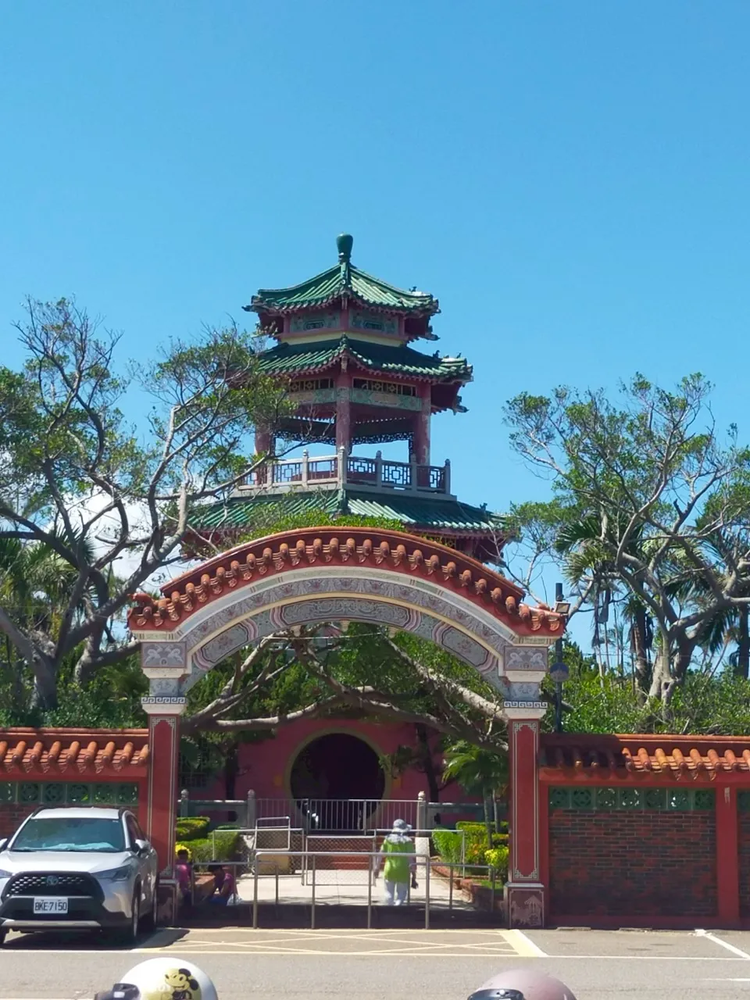
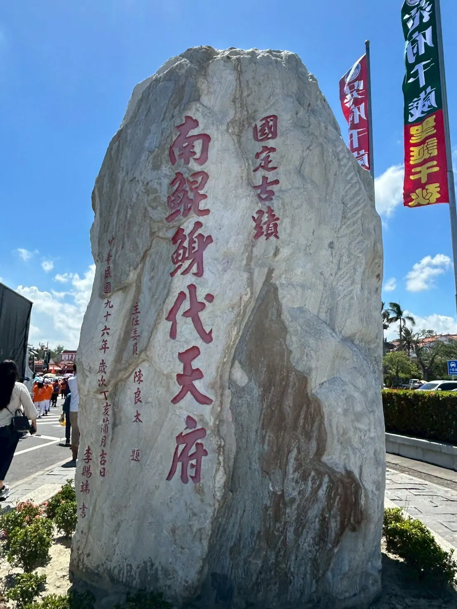
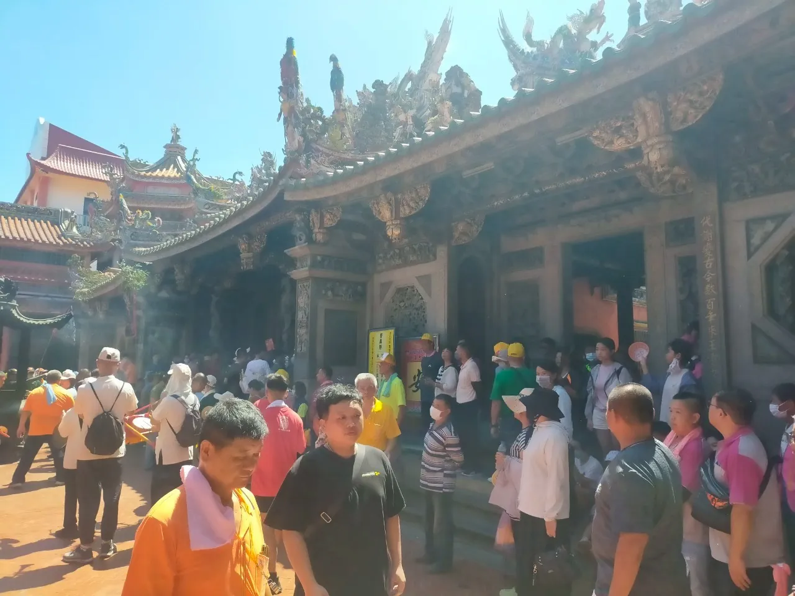

景點照片

南鯤鯓代天府正門

慶成閣

南鯤鯓代天府紀念碑
歷史背景
南鯤鯓代天府位於台南北門區，是台灣五大王廟之一，主祀五府千歲。建於明永曆年間，已有三百年以上歷史，相傳福建移民為求平安渡海來台，遂奉迎王爺神像安座於此，成為台灣最早奉祀王爺信仰的廟宇之一。
建築特色
廟宇格局宏偉，融合閩南與巴洛克風格，擁有精緻的交趾陶與剪粘裝飾，殿內雕樑畫棟，金碧輝煌，為台灣宗教建築的重要代表。屋脊上的雙龍搶珠與龍柱皆極具觀賞價值。
文化活動
每年農曆四月舉行王船祭典，為期一週，吸引大批信徒與遊客參與。儀式包括請王、建醮、遶境、焚燒王船等，展現深厚的民間信仰與傳統藝術。

南鯤鯓代天府五府千歲進香期5/17
交通與資訊
- 地址：台南市北門區鯤江里976號(Google地圖)
- 開放時間：每日 6:00 - 21:00
- 聯絡電話：06-786-3711